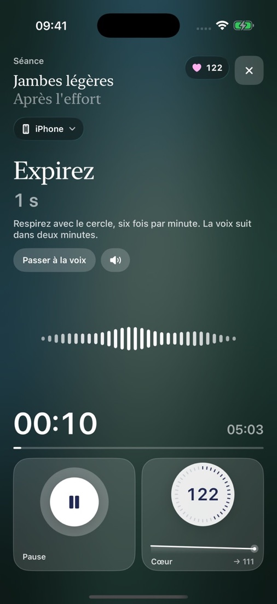
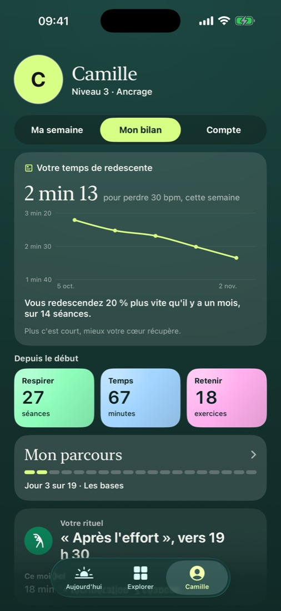
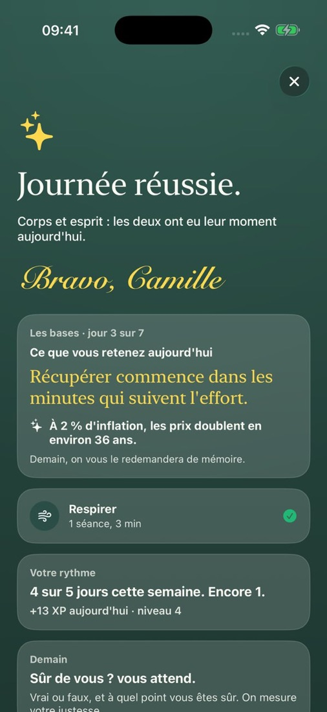

Tous les sports · iPhone et iPad
Après le sport, respirez.
Vous arrêtez la montre, pas le corps : le cœur bat encore à 165, le souffle est court. Course, foot, vélo, escalade, yoga : dès que l'entraînement finit, une voix vous guide. Le souffle ralentit, le corps se relâche, la tête se pose.
Gratuit pendant la bêta · sans carte bancaire · les études citées

La ligne est passée
Ralentissez.
Souffle vous attend
un peu plus loin.
Faites défiler doucement, pas plus vite que votre respiration.
Trois respirations
Le monde
ralentit.
Inspirez par le nez en maintenant le doigt sur l'écran. Relâchez, et laissez l'air sortir un peu plus longtemps qu'il n'est entré.

90 secondes plus tard
Le cœur est
redescendu.
L'expiration plus longue que l'inspiration aide le cœur à ralentir après l'effort. Replere vous guide de la voix, juste après la séance, debout ou assis, montre au poignet ou non.

La nuit tombe
Souffle veille.
Vous dormirez mieux.
Tous les sports. De 90 secondes à quelques minutes. Gratuit pendant la bêta.
0 0
battements par minute, avant puis après une séance (exemple)
0
la séance la plus courte, debout, les yeux ouverts
0
le doigt sur l'appareil photo, et votre pouls s'affiche
0 0
inspirer, puis souffler : six respirations par minute, le rythme qui ralentit le cœur
Le moment d'après
Après l'effort
Vous arrêtez la montre. Le corps, lui, n'a pas fini : le cœur bat encore vite, le souffle est court, la tête tourne. On soigne beaucoup l'entraînement, et très peu les minutes qui suivent.


Nouveau · Sans montre
Votre cœur, mesuré par l'appareil photo.
Posez l'index sur l'objectif arrière de l'iPhone. Le flash éclaire le doigt, et à chaque battement le sang change très légèrement la couleur de la peau. Replere lit ce rythme. C'est le principe des oxymètres de doigt.
Trente secondes avant la séance, trente secondes après. Vous voyez de combien votre cœur est redescendu.
- Avant
- 112 bpm
- Après
- 97 bpm
- Écart
- −15
Exemple de mesure. Une estimation pour comparer avant et après, pas une mesure médicale. Une montre ou une ceinture cardio restent plus précises, et Replere les lit aussi. Aucune image n'est gardée.

Après l'effort, quatre temps
Respirer, relâcher, ressentir, repartir.
- 01RespirerUn souffle lent, l'expiration plus longue que l'inspiration. Le cœur redescend d'un cran à chaque respiration.
- 02RelâcherLa voix vous guide vers ce qui a travaillé : les jambes après une course ou un match, les épaules après la natation ou l'escalade, tout le corps après la salle.
- 03RessentirUn moment pour remarquer ce que vous ressentez, retrouver ce qui vous a fait du bien pendant l'effort, et le garder.
- 04RepartirLa voix vous ramène : les appuis, les yeux qui s'ouvrent, un étirement. Vous ne finissez pas endormi, vous repartez en forme pour la suite de la journée.

La mémoire de soi
Votre semaine, en musique.
Chaque séance pose une phrase au bol chantant, chaque exercice ajoute des clochettes, chaque leçon une note grave. Le dimanche, vous écoutez ce que votre corps a composé. Et une fois par semaine, Replere vous remontre ce que vous aviez noté sept jours plus tôt.


Le mot du fondateur
J'ai créé Replere parce qu'on soigne beaucoup l'entraînement, et très peu les minutes qui suivent. Je voulais une app qui prenne soin du corps et de la tête, sans publicité ni promesse en l'air. Si quelque chose vous déplaît, écrivez à contact@replere.app. Je lis tout.
Anatole Pitron, fondateur · contact@replere.app
Avant d'essayer
Les questions qu'on nous pose.
Combien de temps dure une séance ?
De quatre vingt dix secondes à quelques minutes. La séance d'après effort la plus courte se fait debout, les yeux ouverts, encore en sueur.
Ça marche sans montre ?
Oui. Posez l'index sur l'appareil photo arrière trente secondes avant la séance, puis après. Le flash éclaire le doigt, l'app lit votre pouls, et vous voyez de combien votre cœur est redescendu. Une estimation pour comparer, pas une mesure médicale.
Et avec une Garmin, une Apple Watch ou une ceinture ?
Le cœur s'affiche en direct pendant la séance. La Garmin et la ceinture diffusent en Bluetooth, rien à installer sur la montre. L'Apple Watch passe par l'app Replere sur la montre et Apple Santé.
C'est gratuit ?
Pendant la bêta, tout est gratuit, sans carte bancaire. À la sortie sur l'App Store, les séances resteront gratuites. Replere Plus ajoutera les programmes et le détail de vos données, à 5,99 € par mois ou 39,99 € par an.
Où vont mes données de santé ?
Vos séances et vos données de santé restent sur votre iPhone. Seule exception, si vous connectez Garmin : vos entraînements passent, chiffrés, par un serveur de Replere en France, qui les efface dès que l'iPhone les a reçus. Pas de publicité, pas de traceur. La politique de confidentialité décrit ligne par ligne ce que l'app lit dans Apple Santé.
C'est prouvé ?
Les outils le sont en bonne partie. La respiration lente accélère le retour au repos après l'exercice, et le relâchement musculaire améliore le sommeil dans plusieurs essais. La sophrologie comme discipline a été moins étudiée. Les études et leurs limites sont citées. Replere n'est pas un dispositif médical.
Gratuit pendant la bêta
Essayez Replere après votre prochaine sortie.
Toutes les séances restent gratuites. À la sortie sur l'App Store, Replere Plus ajoutera les programmes et le détail de vos données, à 5,99 € par mois ou 39,99 € par an. Vos données restent sur votre iPhone.

Sur ordinateur ? Scannez ce code avec l'appareil photo de votre iPhone.
Replere accompagne la récupération, ce n'est pas un dispositif médical. Ce que dit la recherche, sources comprises.
Photos : Yazid N, Alekon pictures et Daniel Lincoln, sur Unsplash.